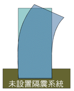
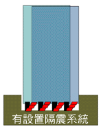

C博士說結構工程
C博士說施工方法
C博士說地震工程
C博士說材料工程
C博士說交通工程
C博士說災害防治
淺說地震
淺說颱風
淺說火災
淺說水災
邊坡滑動
C博士說電腦輔助工程
地震發生的原因
其中的主要原因為板塊運動和火山活動。
1.板塊運動
根據研究報告，陸地是漂浮在地球上的板塊，而板塊是會移動的，當然板塊也有碰撞的時候，如同發生車禍一樣，在車裡的乘客會感受到劇烈的搖晃。同理可知，當大陸板塊相互碰撞擠壓時，住在陸地上的人們，便可感受強烈的搖晃。
由板塊運動造成地震
由世界各地震觀測站所測得的資料，可以明顯的看出火山對地震的影響。火山爆發的能量，引起地面的震動而造成地震。但是一般而言， 這規模與影響範圍遠小於板塊運動。

由火山活動造成地震
耐震設計
在設計結構物將地震力的影響納入考慮，這就是地震設計。一般建築物抵抗地震，可分主動與被動，什麼是主動控制呢？當建築物受到地震力時，可產生與地震力相互抵消的反力，這就是主動控制。 同理可知，被動控制就是當建築物受到地震力時，只用本身的韌性或一些消震設備，吸收能量。可參見下圖。
| 未設置隔震系統 | 設置隔震系統 |
| 結構體變形大,內部設施會受影響 | 利用隔震裝置減少地震力 |
|  |  |
隔震系統與未設置隔震系統之比較
[ 回到首頁 | C博士簡介 | C博士開講 | 虛擬城市探險 | 線上大考驗 | 線上輔助說明 ]
© 1997 316.2 Studio